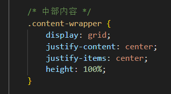
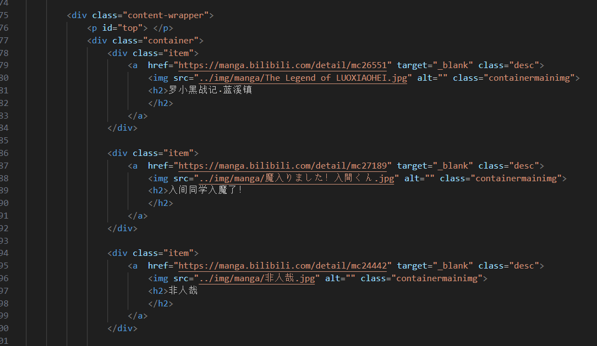
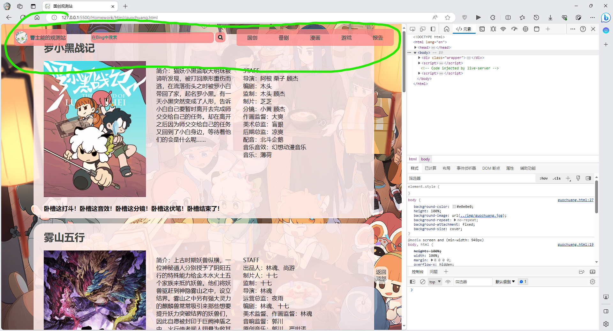

Web应用基础
学号：632107060224
姓名：曹主能
课程名称：Web应用基础
指导教师：王勇
2023 年 6 月 26 日
1.做的什么
欢迎来到我们的观测站！
我们的站点分为主站、国创、番剧、漫画、游戏五个部分。我们的观测站旨在为广大用户提供最新、最全面的内容信息，让用户随时了解ACG的动态。以下是观测站的各个部分的介绍：
主站：主站为用户提供帮助，如何使用这一个观测站，还提供了部分站外链接，也提供了作者的联系邮箱，可以进行反馈或提出建议。
国创：国创观测站为用户提供了国产动画相关信息、动画电影资讯等，让用户了解更多国产动画的内容。
番剧：番剧观测站为用户提供了日本动画相关信息、动画电影资讯等，让用户了解更多日本动画的内容。
漫画：漫画观测站为用户提供了国内外漫画相关信息等，让用户了解更多漫画的内容。
游戏：游戏观测站为用户提供了游戏相关信息、游戏活动资讯等，让用户更好地了解各种游戏的内容。
我们的观测站提供了全面的ACG信息，让用户在这里可以一站式获取各种信息。我们将不断更新站点的内容，为用户提供更好的服务。如果您有任何建议或意见，请随时联系我们。
2.开发过程
(1)分析页面结构
观察了别的网站，比如交大官网这些，发现基本上都是把页面的body分为了3个部分。
于是我也打算这样做，将整个页面分为了这3个部分（headder、content、footer）。
(2)写页面的顶部
我这个分为了3个部分来写，采用的flex布局，把顶部分为了左、中、右三个部分。
其中justify-content属性使用的是space-between的方式。
左边部分，是由一张图片和一小段文字组成。
整个左上部分采用的是flex布局，其中对图片的border-radius设置成了30px，让图片看起来是一个圆形。
而且整个左上部分都在一个超链接标签里面，点击就可以跳转到主界面。
中间部分，是一个可以输入文字的文本和一个按钮组成的，实现了用必应搜索的功能。
右边部分，是一个无序列表，采用了那本教材上案例6d的美化方案,确实很好看。
这一个无序列表，里面有5个超链接，点击文字就可以跳转到相应的子页面。
包含了国创、番剧、漫画、游戏的页面，为了一眼就看到报告在哪里，于是我也把报告也添加到了右上角的导航栏。
然后我就把顶部的这个导航栏，同时放在了这5个页面上。
(3)写页面的中间部分
这5个页面的中间部分整体采用了2种布局方式，其中主页面和漫画子页面采用的是一种，国创、番剧、游戏采用的是另一种的布局方式。
不过中间的部分因为不知道要加上什么内容就之添加了一个占位的标签然后留在后面写。

后面再来说。
(4)写页面的底部
主页因为内容不是很多于是使用了粘性页脚，其他4个子页面因为内容充足就没有用到粘性页脚。
这是主页面的：
其实底部的“站外链接”严格来说不算是在底部的，但是如果放在了底部，底部的“©2023 曹主能”就不居中了（虽然现在应该知道了解决办法，但是现在没时间没精力再改了）。
（期末好忙）
这是其他4个页面的：

就只添加了“©2023 曹主能”，没有添加站外链接。
(5)添加背景图片和更改主题颜色
这个就没啥可说的，就是在.body的css里面添加一个background-image: url("./img/main.jpg");
只不过每一个页面的背景图片都不一样。
更改主题颜色则是在.body、.logo、#search_input、#search_submit、#search_submit:hover、.rtitle、.container等等位置修改了background-color。
还修改了.title_option:hover的border-bottom属性。
(6)添加内容
素材都是来自网上的这些平台，如哔哩哔哩、Steam等，内容都有图片、文字，有部分的地方还添加了超链接。
国创、番剧这两个个页面的内容布局灵活使用了粘性页脚，把min-height属性的100vh改成了自己想要的高度（虽然内容都比这个高度要高）
国创、番剧、游戏中，在每一个“div class="container"”中包含了header、containermain、containerfooter（这个在游戏的子页面没有）
container采用的是grid布局，container内的containermain采用的flex布局（做完了好像发现压根可以不这样做）
主界面、漫画的内容使用了教材案例19b。
只不过主界面没有添加图片，漫画子页面添加了图片

(7)优化页面表现
i.超链接的优化
原版的超链接是蓝色的，还有下划线，访问过后还会变成紫色，很不美观。
于是在每一个页面都添加了下面这一段代码（根据主题的颜色，每个页面的超链接颜色都不一样）
包含了一般的样子、访问过之后的样子、光标悬停在上面的样子、光标点击超链接的样子
ii.按钮和文本框的美化
这个原版也不美观，于是将文本框的边框删除，修改了背景色，同时添加了透明度，并且把尖尖的四角变成圆的。
搜索按钮也是跟这个差不多的方法。
iii.顶部导航栏常驻
这个是从哔哩哔哩网站获取到的灵感。跳转到其他页面也更方便了。
iv.返回顶部按钮
发现好多网页都有这个功能，于是我也添加了一个返回顶部的按钮。
v.页面变窄的响应
页面变窄之后，有些内容就会挤到一坨，会变得不美观，甚至会重叠到一起。于是添加了这个功能。
vi.添加点击特效
写完页面之后，发现没有写js，于是就在页面里面写了一个靠鼠标点击触发的特效。
3.遇到的问题
(1)顶部导航栏不知道怎么常驻
(2)顶部导航栏常驻之后，内容直接到了最顶部

(3)返回顶部按钮回不到最顶部，离顶部还有一段距离，在顶部导航栏常驻之后，点击返回顶部按钮没有任何反应
(4)返回顶部按钮被音频空间挡住（当时第一时间没反应过来是被挡住了）

(5)减小页面宽度时，内容重叠、拉伸等
(6)减小页面宽度时，顶部变得不美观
其实还有一些奇奇怪怪的小问题，只是现在有些想不起来了，也许是因为好像不是很重要就忘记了。
4.如何解决
第4部分与第3部分一一对应。
(1)顶部导航栏不知道怎么常驻
在顶部导航栏（.header-wrapper）的css中加上下面高亮部分的属性即可。

(2)顶部导航栏常驻之后，内容直接到了最顶部
这个方法也许有点笨，但是感觉很实用。
直接在页面的最上方上添加一个元素，并设置合适的边距。
(3)返回顶部按钮回不到最顶部，离顶部还有一段距离，在顶部导航栏常驻之后，点击返回顶部按钮没有任何反应
在解决第二个问题的时候，第三个也同时被解决了，将“返回顶部”按钮的超链接指向#top元素。
(4)返回顶部按钮被音频空间挡住（当时第一时间没反应过来是被挡住了）
position属性设置为fixed之后，可以设置left、bottom的值来调整这个按钮的位置。
(5)减小页面宽度时，内容重叠、拉伸等
可以通过在内容上设置min-width的值来防止这个元素压缩得过小。
在此之外，窗口宽度减小到一定程度时，添加横向滚动条来看到因为窗口过小显示不到的内容
5.哪些未解决
减小页面宽度时，顶部变得不美观
这个还没有解决。想了2个方案。
第一个方案是：上课讲过的responsiveNavbar，当时听完之后没有记住，后面去看视频，发现视频没有声音（？），又换了好几个播放器都是没有声音，最后导入到pr里面发现居然没有音轨（？），虽然视频是一点一点把代码敲出来的但是看着还是好奇怪，而且由于期末了精力有限就没有采用这个方案了。
第二个方案是：使用跟上面(5)的方法，设置最小宽度，通过横向滚动条查看导航栏，虽然会导致在一个视窗内显示不完全，不过这个问题都不大。但是调试了很久都没有让我满意，调试的最终效果就是报告这一个页面的顶部导航栏，即使有横向滚动条都不能显示右上角的部分，感觉改了还不如不改，于是这一个方案也放弃了。
6.总结
通过做这一个Web应用基础的结业项目，我还是收获了很多。
首先了解了一个页面的基本的布局方式，走过了页面设计的基本流程。能使用html的很多标签，还有css的一些布局方式，还包括了JavaScript的基本语法。
还知道了Web页面的用户体验是非常重要的。在设计和开发过程中，我们需要从用户角度出发，考虑用户的使用习惯和喜好，设计出简洁而明了的页面布局，并确保网站的功能和界面操作符合用户的直觉。在这个过程中，我们需要注重UI设计，选择合适的颜色搭配、字体大小和排版，使得用户在使用过程中感到舒适和愉悦。
另外，Web页面的兼容性也是非常重要的。由于不同设备的差异，我们需要进行充分的测试和优化，以确保Web页面在各种设备能够正常使用。这包括使用响应式设计，适应各种屏幕大小，以及考虑到不同浏览器对于CSS和JavaScript的支持情况，采取相应的兼容性措施。
在做这一个页面的期间遇到了不少的问题，也优化了不少bug，但是这个页面仍然还有些不足。
例如，这5个页面中，都用的是内部的css和js，这样虽然减少了文件的数量，但是却降低了代码的复用率，而且会让一个html文件特别大，降低了代码的可读性。
还比如，在有些时候没有做好优化，在视窗宽度较小时，顶部的导航栏会变得拥挤而不好看，这个也没有优化好。
最后，我认为持续学习和探索是Web页面设计与开发中最重要的因素之一。Web页面的技术和工具在不断地更新和发展，我们需要不断地学习和研究，才能更好地开发Web应用。